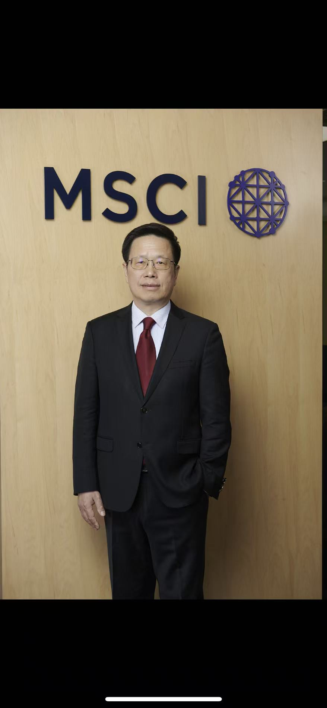

Delin Xie is Executive Director and Greater China Head of Strategic Planning at MSCI, where he also serves as China Mainland Representative. Previously, he was Head of Analytics Tools for Greater China at MSCI, building deep expertise in financial data and investment analysis across the region.
Before joining MSCI, Delin served as Chief Financial Officer of JPMorgan Chase Bank (China), where he led the development and execution of client and business development strategy. Earlier, he was a Financial Institutions Relationship Manager at HSBC, serving China's leading financial institution clients. He began his career as an Asian Development Bank loan officer in the International Department of the People's Bank of China.
Delin holds a graduate degree from the People's Bank of China Graduate School and an MBA from the Wharton School of the University of Pennsylvania. He is a CFA charterholder. His career across a central bank, global investment banking, and financial technology gives him a rare, cross-institutional perspective on the forces shaping China's capital markets and the decisions of those who operate within them.

Roles & Affiliations
Greater China Head of Strategic Planning MSCI
Executive Director · China Mainland Representative MSCI
CFA Charterholder CFA Institute
MBA Wharton School, University of Pennsylvania
Graduate Degree People's Bank of China Graduate School
Keynote Speaker Capital Markets · China Strategy · Leadership
Previously
Head of Analytics Tools, Greater China MSCI
Chief Financial Officer JPMorgan Chase Bank (China)
Financial Institutions Relationship Manager HSBC
ADB Loan Officer, International Department People's Bank of China
MBA Wharton School, University of Pennsylvania
Graduate Degree People's Bank of China Graduate School
Curriculum Vitae
Full professional and academic record, including board positions, speaking engagements, and publications.